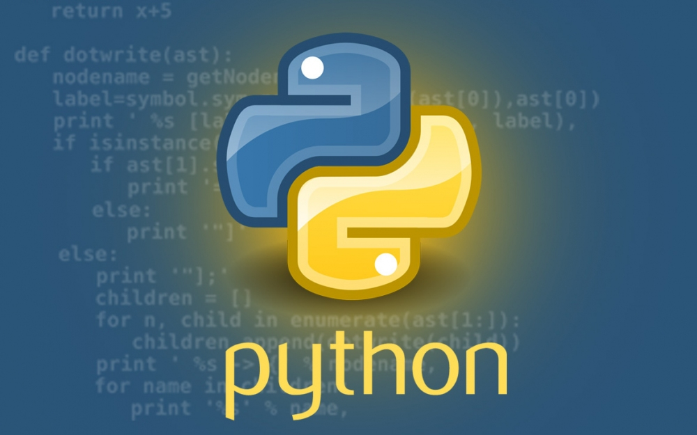

|  | Python[5] (МФА: [ˈpʌɪθ(ə)n]; в русском языке распространено название пито́н[6]) — высокоуровневый язык программирования общего назначения, ориентированный на повышение производительности разработчика и читаемости кода. Синтаксис ядра Python минималистичен. В то же время стандартная библиотека включает большой объём полезных функций. | |
| 2015 | ||